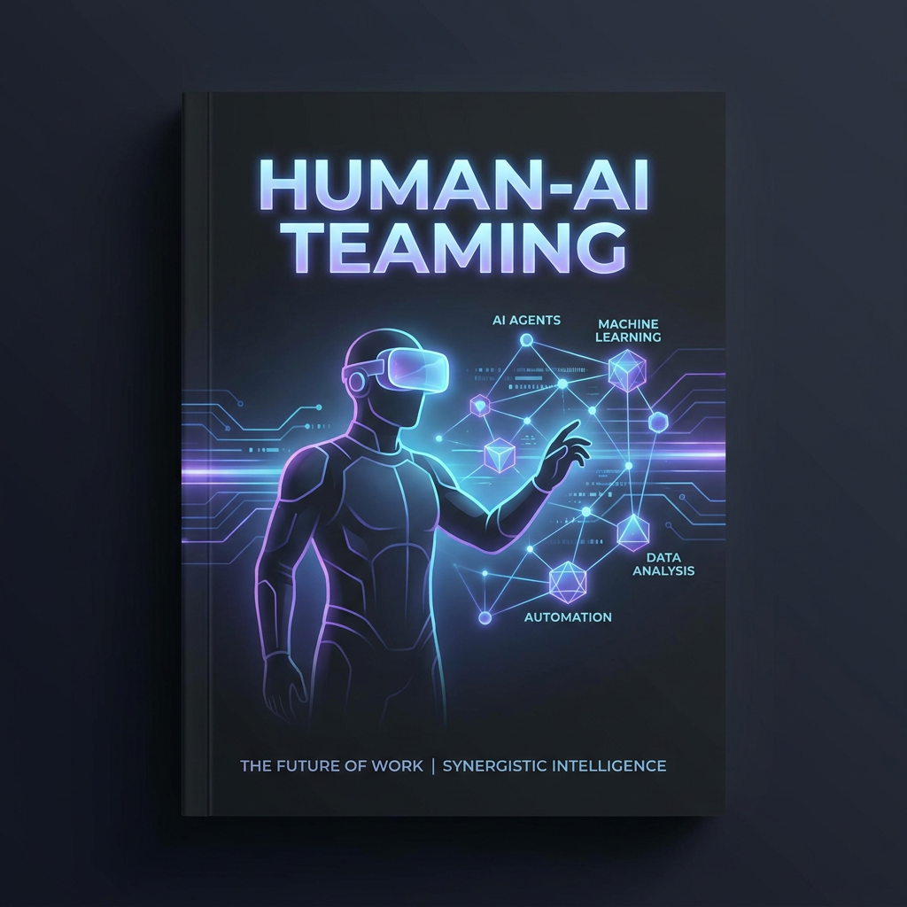

簡立峰（前 Google 台灣董事總經理）於商周 AI 創新百強趨勢年會演講核心概念圖表
「我們不再只是對 AI 問問題的人，我們必須是 AI 的指揮家。」

過去我們習慣「AI 補人類之不足」；但在代理人時代，領先企業已直接翻轉為「以 AI 為中心」。
將 AI 擺在邊緣，僅作為填補人類能力空缺的輔助工具。
主導工作由 AI 執行，人類轉而補足 AI 判斷、感受不到的部分。
Work Faster to Work Smarter。導入 AI 僅為加快速度只是「加法」，突破天花板才是「乘法」。
廣告要「做給 AI 看」的時代正式來臨
從 "Doing the Work" 轉為 "Governing"
高層次推理與決策的全新企業架構
2011年「軟體吞噬世界」是通路革命，而如今場景徹底翻轉。2024年底，Web 上人類寫的內容已少於 AI 生成的內容，整個資訊流傳遞方式正在被重組。
每個部門與流程都需要培養能「問對問題」、「精準評估」、並在最適當時機使用 AI 工具的 super users，成為推動流程改造的種子兵團。
主管必須親自或讓同仁協助，為自己量身打造專屬的 AI 分身（AI Agent）。這能讓管理者從「理解 AI 概念」躍升到「親自感受 AI 威力」的維度。
重新定義職務。例如採購人員不再只做採購文書，而是學習如何授權給 AI，並擁有透過 AI 去「監督、監控」AI 採購活動的高階管理能力。
AI 最強大且最顛覆的價值絕非「降本增效」，而是做研究、研發以及突破人類上限的事。 藥物開發從 10 年縮短至數月，建築設計從 2 年縮短至數週。誰能利用 AI 壓縮研發週期，誰就掌握下一代話語權。